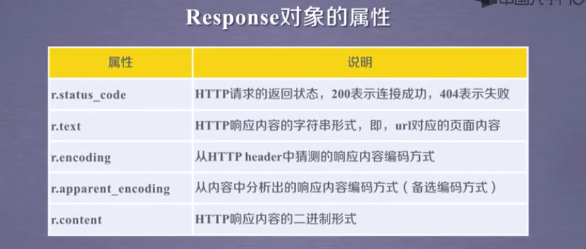
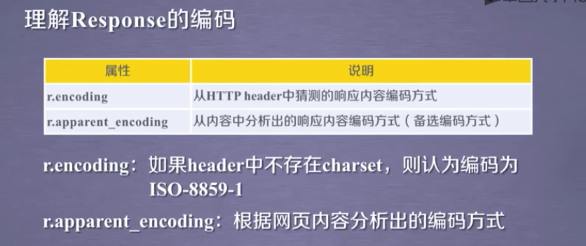
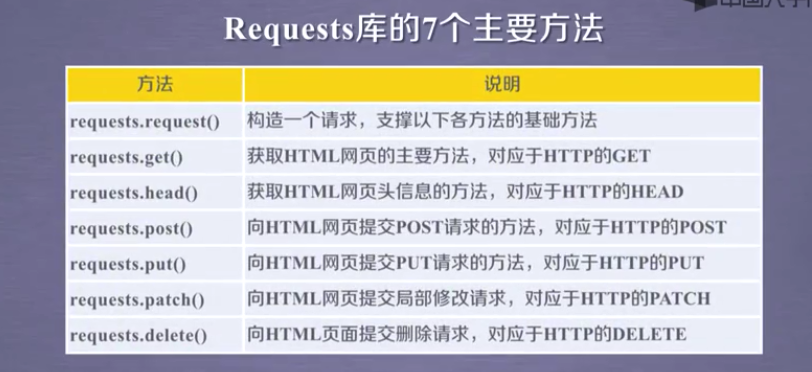
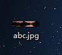

安装 Requests
如果安装了Requests就已经可用了，否则要安装 Requests，只要在你的CMD中运行这个简单命令即可：
pip install requests
requests使用
导入 Requests 模块：
>>> import requests



下载图片及视频
1 import requests
2 path='C:/Users/Administrator/Desktop/abc.jpg'#保存地址及名称
3 url='http://timgsa.baidu.com//timg?image&quality=80&size=b10000_10000&sec=1566444866&di=6374f6f2a1bccbb6f1d4d42f94ddb298&imgtype=jpg&src=http%3A%2F%2Fimg6.bdstatic.com%2Fimg%2Fimage%2Fpublic%2FAK.jpg'#网页地址
4 r=requests.get(url)
5 with open (path,'wb') as f:
6 f.write(r.content)
7 f.close()
8 print('文件保存成功')
F5运行后，我们在桌面上得到名为“abc.jpg”的文件，通过修改名称和地址，我们就可以下载网页上的视频啦！

1 import requests
2 #保存地址及名称
3 path='C:/Users/Administrator/Desktop/abc.mp4'
4 #网页地址
5 url='https://vd4.bdstatic.com/mda-jhdv4x3jakf2n8d3/sc/mda-jhdv4x3jakf2n8d3.mp4?auth_key=1565846233-0-0-d059103292b1a6ab006a79da979a32e7&bcevod_channel=searchbox_feed&pd=unknown&abtest=all'
6 r=requests.get(url)
7 with open (path,'wb') as f:
8 f.write(r.content)
9 f.close()
10 print('文件保存成功')